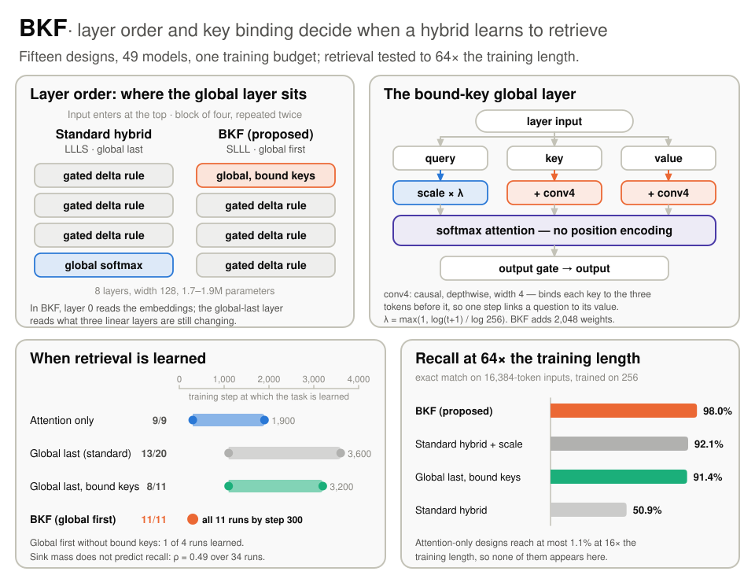

This month we submitted Layer Order and Key Binding Decide When Hybrid Models Learn to Retrieve to ICLR 2027. I am the first author, with Fahmina Taranum, Tasneem Bano Rehman, Sumrana Siddiqui, Sara Rizwan, Samaanah Abdus Salam, Quratulain Nayeem, Summaiya Unnisa Begum, Sadaf Kauser, Muzammil Shareef and Abdul Raheem Ahmed. The project page has the figures.
Hybrid language models such as Qwen3-Next and Kimi Linear make most layers linear attention, which keeps a fixed-size memory, and add a few global attention layers for retrieval. New designs are often judged by their attention sink, the share of attention that lands on the first token. We asked a narrower question: which design learns retrieval early, and keeps it on inputs far longer than those seen in training?
We trained 49 small models, up to 1.9 million parameters, from 15 designs, changed one mechanism at a time, and tested key-value retrieval at every depth up to 64 times the training length.
BKF: bound keys, global layer first
{kind=link}

Putting the global layer first lets it read token embeddings directly, instead of the outputs of linear layers that are still changing early in training. Binding each key and value to the three preceding tokens lets one attention step link a question to its matching value, so the lookup needs one layer instead of two.
Exact-match recall at 16 times the training length (4,096 tokens), averaged over the runs that learned
What we found
With both changes, all 11 runs learned retrieval by step 300 and kept 98.0% recall at 64 times the training length (16,384 tokens). Each change alone leaves one obstacle: with bound keys but the global layer last, 8 of 11 runs learned and none before step 1,100; with the global layer first but no bound keys, 1 of 4 learned. Removing BKF's first global layer at test time drops recall at 4,096 tokens from 99.0% to 0.2%, which places the lookup in that one layer. Across the runs that learned, a larger attention sink did not mean worse recall.
These are small models and a synthetic task. Whether the ordering rule holds at the scale where hybrids are deployed is the next question, and the one I most want to answer.